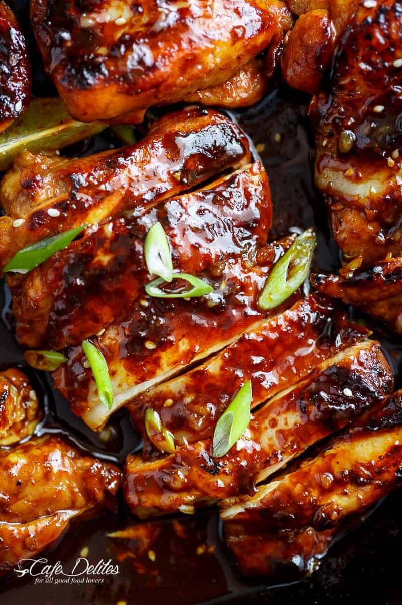

Honey Sriracha Chicken Marinade

Description:
Flavour packed Honey Garlic Sriracha Chicken, made with the easiest,
and most delicious marinade/dipping sauce! Restaurant quality
chicken made right at home!
Ingredients:
- 1/4 cup honey
- 2 tablespoons Sriracha (Asian Chile sauce)*
- 5 cloves garlic crushed (or 1 1/4 tablespoon minced garlic)
- 2 tablespoons rice wine vinegar
- 1 1/2 tablespoons low sodium soy sauce
- 1 tablespoon freshly squeezed lime juice
- 6 boneless chicken thighs with or without skin
- 1 tablespoon cooking oil
- Salt and pepper to season (If desired)
- Sliced green onions (or shallots in Australia), to serve
- Sesame seeds to serve
- Lime wedges to serve
Instructions:
-
In a shallow bowl, mix the honey, Sriracha, garlic, rice wine
vinegar, soy sauce and lime juice together until well combined.
Spoon 4 tablespoons of marinade out of the bowl and reserve to
use for later as a dipping sauce.
-
Cover with plastic wrap and marinade chicken for a minimum of 30
minutes to 2 hours (if time allows), in the refrigerator.
-
Heat 2 teaspoons of oil in a nonstick pan or cast iron skillet
(or grill pan) over medium heat. Sear the chicken in two batches
(I do 3 thighs per batch), on both sides along with any sauce
leftover in the bowl, until the chicken is cooked through and no
longer pink in the middle; the skin is crisp and golden browned,
and the underside is charred slightly (chicken will char
slightly due to the honey). Transfer chicken to a warm plate,
tent with foil and allow to rest for 5 minutes.
-
OPTION A: Add the reserved sauce to the hot pan to warm through
on medium heat, stirring occasionally while mixing all of the
pan juices through the sauce.
-
OPTION B: Do not add the sauce to the pan. Serve chicken with
remaining pan juices left over in the pan, and pour reserved
sauce over each chicken (this option ensures a slightly spicier
end result).
-
Serve chicken immediately along with the sauce. Garnish with
sliced green onion, sesame seeds and lime wedges. Serve with
steamed veggies, over rice or noodles.